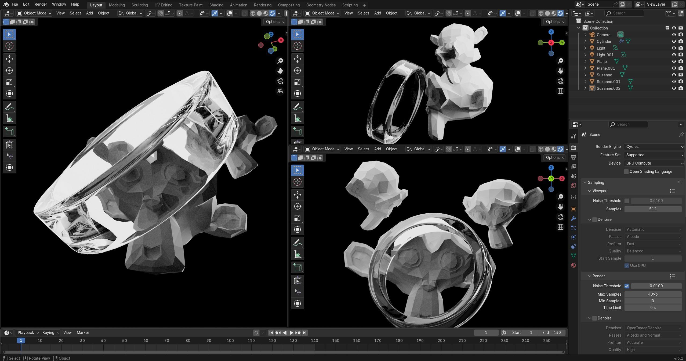

Blender Camera Controls: Complete Beginner's Guide to Rotating & Moving Cameras
If you've ever opened Blender and felt lost trying to navigate around your 3D scene, you're not alone. Camera controls are the foundation of everything you'll do in Blender, yet they're often glossed over in tutorials. Whether you're searching for "blender rotate camera" or just trying to figure out how to look around your scene properly, this guide will transform you from a frustrated beginner into someone who can navigate 3D space like a pro. We'll cover every method, shortcut, and technique you need to master camera movement in Blender 4.3.
1. Understanding Blender's Two Types of "Cameras"
Before we get into controls, it's crucial to understand that when people talk about "camera controls" in Blender, they're usually referring to one of two things, and the confusion between them trips up many beginners.
The Viewport Camera (What You Control Most)
This is your viewpoint as you work in Blender. It's how you look around and navigate your 3D scene. When you rotate your view or zoom in and out, you're controlling the viewport camera. This is what most people mean when they search for "blender rotate camera" - they want to know how to look around their scene.
The Scene Camera (The Actual Camera Object)
This is the actual camera object in your scene - the one that determines what gets rendered in your final images or animations. It appears as a pyramid-shaped wireframe in your viewport and can be moved, rotated, and positioned just like any other object.
Both are important, but they serve different purposes. The viewport camera is for working and navigating, while the scene camera is for framing your final shots. Let's start with viewport navigation since that's what you'll use most often.
3. Essential Keyboard Shortcuts for Camera Control
The Numpad: Your Camera Control Center
The numeric keypad is like having preset camera positions at your fingertips. These shortcuts instantly snap your view to specific angles, making it incredibly fast to examine objects from standard perspectives.
Primary View Shortcuts
- Numpad 1: Front view
- Numpad 3: Right side view
- Numpad 7: Top view
- Numpad 0: Camera view (what your render will look like)
Opposite Views
Add Ctrl to any of the above to get the opposite view:
- Ctrl + Numpad 1: Back view
- Ctrl + Numpad 3: Left side view
- Ctrl + Numpad 7: Bottom view
Perspective and Orthographic
- Numpad 5: Toggle between Perspective and Orthographic view
Perspective view mimics how human eyes see the world (objects get smaller with distance), while Orthographic view shows everything at true scale regardless of distance. Orthographic is great for precise modeling work.
Quick Navigation Shortcuts
- Home: Frame all objects in view
- Numpad Period: Frame selected object
- Shift + C: Reset 3D cursor and view to center
Laptop Users Without Numpad:
Go to Edit → Preferences → Input and check "Emulate Numpad." This lets you use the number row at the top of your keyboard instead of a dedicated numpad.
4. Mastering Mouse Controls: Smooth and Precise Navigation
Understanding Mouse Sensitivity
One of the first things new users notice is that camera movement can feel either too slow or too fast. The good news is that this is completely adjustable, and understanding how to control sensitivity will make navigation feel natural.
Controlling Rotation Speed
When rotating your view with the middle mouse button, the speed depends on how far you drag from your starting point. Small movements near the center create fine adjustments, while larger movements create faster rotation. This gives you both precision and speed when you need them.
Zoom Speed and Behavior
Mouse wheel zoom has two behaviors that you can adjust in preferences:
- Zoom to Mouse Position: Zooms toward wherever your cursor is pointing
- Zoom to Center: Always zooms toward the center of the view
To change this: Edit → Preferences → Navigation → Zoom Method.
Advanced Mouse Techniques
The Focus Trick
Here's a technique that will change how you navigate: you can change what point your view rotates around by adjusting your zoom and position before rotating. If you zoom in close to a specific part of your model and then rotate, you'll orbit around that area instead of the scene center.
Smooth vs. Snappy Movement
Blender's navigation can feel different depending on your mouse settings and preferences. If movement feels sluggish, check these settings:
- Edit → Preferences → Navigation → Orbit Method
- Try "Turntable" vs "Trackball" to see which feels better
- Adjust "Orbit Sensitivity" if movement feels too fast or slow
5. Controlling the Actual Scene Camera
Now let's talk about the actual camera object in your scene - the one that determines what gets rendered. This is different from viewport navigation, but equally important for creating good renders.
Selecting and Moving the Camera
The camera appears as a pyramid-shaped wireframe in your viewport. To work with it:
- Select the Camera: Click on the camera object, or press 0 on the numpad to enter camera view, then Tab to exit.
- Move the Camera: With the camera selected, press G to grab/move it, or use the move tool.
- Rotate the Camera: Press R to rotate, or use the rotation tool.
Camera View Navigation
When you press Numpad 0, you see exactly what your camera sees. This is called "Camera View" and it's essential for framing your renders. While in camera view:
- The red border shows what will be rendered
- You can still navigate using all the normal controls
- Lock Camera to View: In the sidebar (N panel), under View → Camera, check "Lock Camera to View" to move the camera by navigating
The Lock Camera to View Trick
This is a game-changer for camera positioning. When "Lock Camera to View" is enabled, any viewport navigation you do while in camera view actually moves the camera object. This means you can:
- Press Numpad 0 to enter camera view
- Enable "Lock Camera to View" in the sidebar
- Navigate normally to position your shot
- The camera moves with your view automatically
This is much more intuitive than trying to manually move and rotate the camera object.
6. Focus and Framing Techniques
Changing Your Orbit Point
By default, when you rotate your view, it orbits around the center of your scene. But you can change this focus point to orbit around specific objects or areas, which makes examining details much easier.
Focus on Selected Object
The easiest way to change your focus point:
- Select the object you want to focus on
- Press Numpad Period to frame the selection
- Now when you rotate, you'll orbit around that object
Focus on Cursor Position
You can also orbit around wherever you place the 3D cursor:
- Hold Shift and right-click to place the 3D cursor
- In the header, change the pivot point to "3D Cursor"
- Now rotation will happen around the cursor location
Framing Your Shots
Getting good camera angles is an art, but there are some technical techniques that help:
Rule of Thirds
Enable overlays in camera view to see composition guides:
- Enter camera view (Numpad 0)
- In the overlay options, enable "Thirds" or "Golden" ratio guides
- Position important elements along these lines
Safe Areas
These show you the areas that will definitely be visible on different types of displays - useful for video work or when your output might be cropped.
Pro Tip:
Use the numpad shortcuts to quickly jump between views when positioning your camera. Get a rough position from the side view (Numpad 3), then switch to camera view (Numpad 0) to fine-tune the framing.
7. Troubleshooting Common Camera Control Issues
Problem: "I Can't Rotate My View Anymore"
This is usually one of two issues:
Solution 1: Check Your Pivot Point
If your pivot point is set to "Active Element" or "Individual Origins," rotation might behave strangely. Change it back to "Median Point" in the header.
Solution 2: Reset Your View
Sometimes your view can get "lost" in 3D space. Try these reset commands:
- Home: Frame all objects
- Shift + C: Reset cursor and view to center
- Numpad 7: Jump to top view to reorient yourself
Problem: "My Camera Moves Too Fast/Slow"
This is usually a scale issue. If your objects are very large or very small compared to Blender's default scale, navigation can feel off.
Solution: Adjust Navigation Settings
- Go to Edit → Preferences → Navigation
- Adjust "Orbit Sensitivity" and "Zoom Speed"
- Try different "Orbit Method" options
Problem: "I Can't See My Object Anymore"
Objects can easily disappear from view, especially when learning navigation.
Quick Recovery Methods:
- Home: Frame all objects in the scene
- Select object in outliner, then Numpad Period: Frame specific object
- Alt + Home: Frame all objects in all views
Problem: "My Mouse Controls Don't Work"
Hardware compatibility issues are rare but do happen.
Solutions to Try:
- Enable "Emulate 3 Button Mouse" in preferences
- Try the keyboard alternatives (Numpad Period + drag)
- Check if your mouse has special software that might be interfering
- Try a different mouse if available
8. Advanced Camera Control Techniques
Walk and Fly Navigation
For architectural visualization or game-like navigation, Blender offers alternative navigation modes that simulate walking or flying through your scene.
Walk Mode
Activate with Shift + ` (backtick), then:
- WASD: Move forward, left, back, right
- Mouse: Look around
- E/Q: Move up/down
- Shift: Move faster
- Alt: Move slower
Fly Mode
Similar to walk mode but without gravity simulation - you can move freely in all directions.
Viewport Gizmos
The small widget in the top-right corner of your viewport is actually interactive:
- Click on axes: Instantly jump to that view
- Click on house icon: Frame all objects
- Drag the sphere: Rotate view smoothly
Multiple Camera Setup
For complex scenes, you might want multiple cameras for different shots:
- Add additional cameras (Shift + A → Camera)
- Select different cameras and press Ctrl + Numpad 0 to make them active
- Each camera can be positioned independently
- Switch between them for different render angles
Camera Animation
Animating cameras creates dynamic shots:
- Position your camera for the first frame
- Press I to insert keyframes for location and rotation
- Move to a different frame
- Reposition the camera and insert more keyframes
- Blender interpolates the movement between keyframes
Professional Workflow Tip:
Use the "Lock Camera to View" technique to rough out camera animations. Enable it, navigate to create your camera path, then disable it and fine-tune with regular keyframe animation.
9. Viewport Shading and Display Options
Camera control isn't just about movement - it's also about how you display your scene. The viewport shading options in the header dramatically change how you see your work.
The Four Viewport Shading Modes
Located in the header, these four icons control how your scene is displayed:
Wireframe Mode
- Shortcut: Z then 4
- Use: See the underlying mesh structure
- Good for: Understanding topology, selecting hidden vertices
Solid Mode (Default)
- Shortcut: Z then 6
- Use: Basic shaded view without materials
- Good for: Modeling, general work
Material Preview
- Shortcut: Z then 2
- Use: Preview materials with simple lighting
- Good for: Material work, quick previews
Rendered Mode
- Shortcut: Z then 8
- Use: Full render preview in real-time
- Good for: Final lighting, camera positioning
Quick Shading Pie Menu
Press Z to open the shading pie menu, then click or press the corresponding number. This is much faster than clicking the header icons.
Overlay Options
The overlays dropdown (next to the shading modes) controls what extra information is displayed:
- Wireframes: Show mesh edges on top of solid shading
- Face Orientation: Blue for front faces, red for back faces
- Statistics: Show polygon and vertex counts
- Grid and Axes: Reference grid and coordinate axes
10. Customizing Your Camera Control Setup
Personalizing Navigation Preferences
Everyone has different preferences for how navigation should feel. Blender's highly customizable, so you can adjust it to match your workflow or experience from other software.
Key Preference Settings
Go to Edit → Preferences → Navigation to find these options:
- Orbit Method: "Turntable" keeps horizon level, "Trackball" allows free rotation
- Zoom Method: "Zoom to Mouse Position" vs "Zoom to Center"
- Invert Mouse Zoom: Flip scroll wheel direction
- Orbit Sensitivity: Make rotation faster or slower
- Zoom Speed: Control how quickly you zoom in/out
Coming from Other Software
If you're used to other 3D applications, you might want to adjust Blender's navigation to feel more familiar.
Maya-style Navigation
Maya users can enable "Emulate 3 Button Mouse" and adjust orbit settings to feel more like Maya's camera controls.
3ds Max-style Navigation
3ds Max users might prefer different zoom behavior and orbit methods. Experiment with the navigation settings to find what feels natural.
Setting Up Multiple Viewports
For complex projects, multiple viewports can be helpful:
- Drag from the corner of your viewport to split it
- Set each viewport to different views (Front, Side, Top, Camera)
- Navigate in one viewport while others show different angles
- Use View → Area → Duplicate Area to copy a viewport setup
Saving Your Preferences
Once you've customized your navigation settings:
- Go to Edit → Preferences
- Adjust all your settings
- Click the hamburger menu (≡) in the bottom-left
- Choose "Save Preferences"
Your settings will now be preserved for future Blender sessions.
Backup Your Preferences:
Once you have your perfect setup, go to File → Defaults → Save Startup File. This saves your current scene and preferences as the default for new projects.
11. Practical Exercises to Master Camera Controls
Reading about camera controls is one thing, but muscle memory comes from practice. Here are some exercises that will make navigation feel natural.
Exercise 1: The Navigation Dance
Start with the default cube and practice this sequence without thinking:
- Orbit around the cube using middle mouse
- Press Numpad 1 for front view
- Press Numpad 3 for side view
- Press Numpad 7 for top view
- Press Home to frame all
- Zoom in and out with mouse wheel
- Pan around with Shift + Middle Mouse
- Press Numpad 0 for camera view
Repeat this sequence until it becomes automatic. Time yourself - you should be able to complete it in under 10 seconds.
Exercise 2: Object Examination
Add a more complex object (like Suzanne the monkey: Shift + A → Mesh → Monkey) and practice examining it:
- Select the object
- Press Numpad Period to frame it
- Orbit around to see all angles
- Use numpad shortcuts to see orthographic views
- Zoom in to examine details
- Pan to look at different parts while zoomed in
Exercise 3: Camera Positioning Challenge
This exercise teaches you to position the scene camera effectively:
- Create an interesting scene (add several objects at different positions)
- Press Numpad 0 to enter camera view
- Enable "Lock Camera to View" in the sidebar
- Navigate to frame an interesting composition
- Try to include all objects in the frame
- Disable "Lock Camera to View" and fine-tune if needed
Exercise 4: Speed Navigation
This builds speed and efficiency:
- Start with the default scene
- Using only keyboard shortcuts, try to:
- Jump to front view
- Switch to camera view
- Return to user perspective
- Frame all objects
- Switch to wireframe mode
- Return to solid mode
Goal: Complete this sequence in under 5 seconds using only keyboard shortcuts.
12. Common Mistakes and How to Avoid Them
Mistake 1: Fighting the Default Navigation
Many beginners try to force Blender to work like other software instead of learning its conventions.
Solution: Give Blender's default navigation a fair try for at least a week before customizing. The middle mouse button orbit system is actually very efficient once you get used to it.
Mistake 2: Not Using Numpad Shortcuts
Trying to manually navigate to standard views instead of using the numpad shortcuts.
Solution: Force yourself to use Numpad 1, 3, 7 for a few days. It feels awkward at first but becomes much faster than manual navigation.
Mistake 3: Ignoring the Focus Point
Rotating around the wrong center point makes navigation frustrating.
Solution: Always frame your object of interest with Numpad Period before starting detailed work. This sets the rotation center to where you want it.
Mistake 4: Working in the Wrong View Mode
Trying to do material work in solid mode, or modeling in rendered mode.
Solution: Learn when to use each viewport shading mode. Solid for modeling, Material Preview for material work, Rendered for final positioning.
Mistake 5: Not Saving Viewport Setups
Manually repositioning cameras and views for every session.
Solution: Save your startup file (File → Defaults → Save Startup File) with your preferred viewport layout and camera positions.
Mistake 6: Forgetting About Camera View
Positioning objects in user perspective instead of checking what the actual camera sees.
Solution: Regularly switch to camera view (Numpad 0) to check your composition. What looks good in user perspective might be completely wrong for rendering.
Hardware Limitation Awareness:
If you're on a laptop without a proper mouse, invest in a three-button mouse with a scroll wheel. It makes a huge difference in Blender navigation efficiency.
Conclusion: Building Your Navigation Foundation
Mastering camera controls in Blender isn't just about memorizing shortcuts - it's about building the muscle memory that lets you focus on creativity instead of fighting the interface. The techniques we've covered form the foundation of every task you'll do in Blender, from simple modeling to complex animation work.
Your Navigation Toolkit
You now have the complete toolkit for Blender navigation:
- Basic Controls: Middle mouse orbit, wheel zoom, shift+middle mouse pan
- Quick Views: Numpad shortcuts for instant perspective changes
- Camera Work: Both viewport navigation and scene camera positioning
- Advanced Techniques: Focus control, walk mode, and multiple camera setups
- Troubleshooting: Solutions for when navigation goes wrong
Practice Makes Perfect
Like learning to drive a car, camera navigation needs to become automatic. The exercises in this guide will help build that muscle memory, but the real learning happens through daily use. Don't worry if it feels awkward at first - everyone goes through this learning curve.
Beyond Basic Navigation
Once navigation becomes natural, you'll find that Blender opens up in new ways. You'll spend less time fighting the interface and more time creating. Good camera control also improves your artistic eye - when you can quickly explore different angles and perspectives, you develop better composition skills.
Next Steps
Now that you've mastered camera controls, you're ready to tackle more advanced Blender topics with confidence. Whether you're moving on to modeling, materials, or animation, the navigation skills you've learned here will serve you well in every area of 3D creation.
Remember: every expert was once a beginner who felt lost in 3D space. The difference is practice and persistence. Take your time, be patient with yourself, and soon you'll be navigating Blender like you've been doing it for years.
Your Daily Practice:
For the next week, start each Blender session by running through the navigation exercises. Just five minutes of focused practice will cement these skills and make everything else you do in Blender feel more natural.